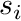
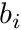
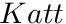
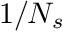
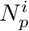
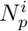
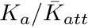

- Introduction
- CBCT geometries
- Particle source definition
- CBCT setup
- Scoring options input block
- Output options block: all scans
- Variance reduction techniques
- Smoothing
- Monte Carlo transport parameters
- Usage
- An input example: 0 deg CBCT scan of a water cube with 5 bone rods
Introduction
The C++ application egs_cbct is an advanced EGSnrc application whose main goal is the fast estimation of the scatter contribution to an ideal detector in a cone-beam CT (CBCT) setup by means of sophisticated Variance Reduction Techniques (VRTs) and a smoothing algorithm. It can also be used for estimating the total signal to the detector and its individual components: transmitted and scattered. Initially designed for the purpose of simulating a CBCT setup, it can be equally used for modelling conventional CT scanner setups. Details of a proposed correction algorithm can be found in [Phys. Med. Biol. Vol. 55 (16), 2010, 4495-4507] and a description of the different VRTs can be found in [J. Phys.: Conf. Ser. 102, 2008, 012017].
A CBCT scan is obtained by scoring the photon beam contribution (air-kerma) to an ideal planar detector after going through a phantom at a specific angle on a circular orbit around one of the coordinate axes (x-axis, y-axis or z-axis). Each run will produce one projection and in order to obtain a full scan, one has to submit the corresponding number of calculations either manually or with the help of a script.
This code is by no means in a final stage. It is still very experimental and it has been cleaned for release in the hope it will be useful for EGSnrc users. A number of collaborators have been using it for some time and have helped with their comments and bug reporting. The implementation of a realistic detector model and of a more efficient way to compute all projections are just a couple of features currently missing.
CBCT geometries
Geometries are specified in an input file as explained in the geometry module. In order to produce a proper measure of the attenuation along the beam path, one needs to first run a simulation without a phantom to generate a so called "blank" scan.
A geometry definition for such a calculation would be:
:start geometry definition:
##################################### blank phantom
:start geometry:
library = egs_ndgeometry
type = EGS_XYZGeometry
x-slabs = -15 30 1
y-slabs = -15 30 1
z-slabs = -15 30 1
name = blank_phantom
:start media input:
media = VACUUM, AIRICRU512
:stop media input:
:stop geometry:
simulation geometry = blank_phantom # use this to create blank scan
:stop geometry definition:
The blank scan file generated in this initial run is then used as input for computing the real scan  as , where  is the blank scan and  is the "real" detector signal produced by photons after going through the phantom.
is the "real" detector signal produced by photons after going through the phantom.
The phantom geometry can be any geometry available in the egs++ geometry library.
Particle source definition
For full description of the source input, see the particle sources module .
Here is an example for a collimated point source of 60 keV photons:
:start source:
library = egs_collimated_source
name = the_zero_collimated_source
distance = 80
:start source shape:
type = point
position = 0, 0, -100
:stop source shape:
:start target shape:
library = egs_rectangle
rectangle = -25.8 -25.8 25.8 25.8
:stop target shape:
:start spectrum:
type = monoenergetic
energy = 0.06
:stop spectrum:
charge = 0
:stop source:
By default sources are placed at the origin and directed along the positive z-axis. If the source should be somewhere else, an affine transformation must be applied. Transformations are not implemented in most sources, hence one must use a transformed source. The example below rotates the collimated source from the previous slide  around the y-axis, placing it on the positive x-axis:
around the y-axis, placing it on the positive x-axis:
:start source:
library = egs_transformed_source
name = the_collimated_source
source name = the_zero_collimated_source
:start transformation:
rotation = 0 1.570796326794896619 0
:stop transformation:
:stop source:
CBCT setup
After the initial source definition above, one needs to define the orbit and the number of projections that will be generated (Each run will just generate one projection).
This input block defines the rotation that needs to be applied to the source through the use of either the x-rotation , y-rotation or z-rotation input key. Its value is the projection angle in degrees.
The orbit and step inputs define how many projections are going to be generated. step is the angular interval at which projections will be acquired. The sign of step defines whether the rotation is clock- or counterclockwise. The projection number is obtained from the ratio of the angular rotation to the module of the value of step. Here is an example of this input block:
:start cbct setup:
orbit = 360.0
step = -2
z-rotation = 0 # x-rotation, y-rotation or z-rotation
:stop cbct setup:
This example defines a orbit with 180 projections every  rotating counterclockwise.
rotating counterclockwise.
Scoring options input block
This input block defines the calculation geometry and detector details. Only one geometry is currently allowed, although it should be easy to implement the simulation on more than one geometry which would allow the calculation of the blank scan and different projections in the same run. However, the latter would benefit more from the implementation of a parallel distribution algorithm.
:start scoring options:
calculation type = planar # fixed for now as only scoring at a plane
:start calculation geometry:
#geometry name = blank_phantom # use first to create blank scan
geometry name = phantom
:stop calculation geometry:
:start planar scoring:
See next section ...
:stop planar scoring:
:stop scoring options:
Scoring options: planar scoring
This input block defines detector details and the name of a file containing values for air. The scoring plane defaults to plane at origin with normal along the positive z-axis to mimic the default used by sources and shapes. Users must define a proper transformation to make sure source particles don't miss the scoring plane.
:start planar scoring:
minimum Kscat fraction = 0.5
surrounding medium = VACUUM #AIRICRU512
screen resolution = 64 64
voxel size = 1.25
:start transformation:
translation = 55 0 0
rotation = 0 1.570796326794896619 0
:stop transformation:
muen file = absolute_file_name_for_E_muen_air
:stop planar scoring:
The affine transformation defined in this input block is applied to the scoring plane or detector, which is initially at the origin. It rotates the plane around the y-axis to face the transformed source defined in section Particle source definition and placed on the x-axis at 55 cm from the origin.
minimum Kscat fraction is the fraction of the maximum scatter above which regions are included in the efficiency estimate based on their scatter signal uncertainty. Efficiency is computed using the relative root mean squared error abd the CPU time.
Output options block: all scans
This input block controls the type of scan files generated during the simulation. It also allows the user to request which signal to monitor during the simulation by means of the display type keyword. Here is an input block example:
:start output options:
display type = total # total, attenuated, scattered
store signal map = no # yes, no (default)
store data arrays = yes # yes (default), no
#verbose = yes # no (default), yes
:start scan output:
scan file = absolute_real_scan_file_name
blank scan = absolute_blank_scan_file_name
scan type = all # all,real,scatter,ideal,blank,all, none
:stop scan output:
:stop output options:
If one wants to look at an ASCII version of the scan, one can request the output of a signal map (*.egsmap) file containing , and . The store data arrays input key defines whether the user wants to create *.egsdat files containing a snapshot of the simulation which gets updated after every batch. This is necessary to be able to restart a calculation, for instance when computing a real scan. However, if you are running very fast simulations (eg. computing scatter for many projections) in a cluster environment, generation of such files could slow down the network significantly. The verbose option outputs several files providing inside into the different VRTs splitting techniques, such as an importance map, a correction histogram, and an error distribution. It is disabled by default.
Producing a blank scan
As mentioned in section CBCT geometries, a blank scan calculation is required previous to computing the real scan. The input block required to accomplish this is shown below:
:start output options:
display type = total # total, attenuated, scattered
store signal map = no # yes, no (default)
store data arrays = yes # yes (default), no
#verbose = yes # no (default), yes
:start scan output:
scan file = absolute_blank_scan_file_name
scan type = blank
:stop scan output:
:stop output options:
If the scan type entry is omitted, egs_cbct defaults to generating a blank scan.
Variance reduction techniques
Most variance reduction techniques (VRTs) are intended to improve the efficiency of the scatter contribution calculation with the exception of the forced detection technique, which should ALWAYS be used for more efficient scoring even for blank scan calculations. When simulating a full ("measured") scan, one should avoid using scatter enhancing VRTs which could cause undersampling of the primary contribution. However, fixed splitting combined with Russian Roulette gives some efficiency improvement even when computing a full scan. These are the VRTs available in egs_cbct :
- Forced Detection
- Path length biasing
- Splitting + Russian Roulette + Delta transport
It is crucial to perform a benchmark study of the different VRTs in order to optimize them for a specific setup. Optimum parameters will change for different detector, phantom and source configurations. Another useful test is to check that no bias is introduced compared to the analog simulation.
:start variance reduction:
# Defines how photons score
#scoring type = track_length # photons CROSSING scoring plane
scoring type = forced_detection # photons AIMED at scoring plane (FD)
# (default)
delta transport medium = CORTICALBONE
#################################################
# Path length biasing 2*eta0**2/(eta + eta0)**3 #
#################################################
mfp transform = 4.0 # eta0 is a floating point parameter
.
.
See next sections for particle splitting inputs
The path length biasing technique implemented in egs_cbct uses a different probability distribution than the one used in the well known exponential transform (used in DOSRZnrc). It achieves path length stretching that favours interactions deeper in the phantom and does not exhibit a dependency on the particle's direction, thus avoiding potentially large weight fluctuations.
Delta transport is used to save time by not checking geometrical boundaries for photons moving away from the scoring plane. Boundary checking is very time consuming in geometries with a large number of very small regions. Although the delta transport technique can be used independently, it MUST be used when particle splitting is used.
The next three sections describe three different approaches to selecting the splitting number.
Fixed splitting (FS)
This technique can be also used for computing a measured scan. It is the simplest splitting scheme which, combined with smoothing, has been shown to increase efficiency by a factor of 1000 in a simulated chest scan. Use of the other more sophisticated splitting schemes gives a factor of 2 over fixed splitting.
:start variance reduction: Other input here ... . . delta transport medium = CORTICALBONE . . FS splitting = 9000 1000 # Np Ns :stop variance reduction:
Photons aimed at detector are split times and those not aimed at detector are Russian rouletted (RR) with probability  and their interaction split times.
Region Dependent Importance Sampling (RDIS)
Another approach for selecting the splitting number is to divide up the phantom into importance regions. The importance of region  , is calculated as the ratio of the average contribution from region to the signal, , to the average contribution from all regions to the signal, . The splitting number  for the i-th photon in region is selected proportional to
, is calculated as the ratio of the average contribution from region to the signal, , to the average contribution from all regions to the signal, . The splitting number  for the i-th photon in region is selected proportional to  . An example input block is shown below:
. An example input block is shown below:
:start variance reduction:
Other input here ...
.
.
delta transport medium = CORTICALBONE
RDIS splitting = 10000 1000 # Np Ns
:start RDIS splitter setup:
splitter geometry = 20 20 20
minimum splitting = 10
maximum splitting = 10000
:stop RDIS splitter setup:
:stop variance reduction:
The splitter geometry defines the importance regions grid. This grid's resolution must be a factor of the phantoms resolution and never larger.
To avoid very large and very small splitting numbers in the early stages of the simulation (when the uncertainties in are large), minimum and maximum splitting number cutoffs needed. A so-called warming period is needed at the beginning of a simulation during which all importances are set to unity (causing the splitting scheme to revert to the FS technique). The proper length of this warming phase remains be investigated. The longer this phase, the smaller the uncertainties on the initial importances. However, too long a warming phase will have a detrimental effect on the efficiency due to prolonged CPU time. In egs_cbct the first batch of histories is used for the warming phase. The values of and are accumulated during the simulation and the importances are updated periodically after every batch has been executed.
This technique increases the efficiency by about a factor of 2 compared to FS. However its optimization is more involved as the number of parameters is larger.
Position Dependent Importance Sampling (PDIS)
Position dependence important sampling, by default, computes spliting number based on the ratio , where is the average primary signal on the screen and is the signal from the current particle's position, attenuated along the particle's path to the detector through an average medium. The particle's path has been previously obtained while tracing the photon through the geometry. As with FS, photons aimed at the detector are split times and if they are moving away from the detector after surviving RR they are split times.
:start variance reduction: Other input here ... . . delta transport medium = CORTICALBONE . . PDIS splitting = 9000 1000 # f_split Ns :stop variance reduction:
This technique increases the efficiency by about a factor of 2 compared to FS and it should offer a similar efficiency gain as RDIS. Its optimization can become more involved than FS if a corrector (see below) is used since the number of parameters to optimize becomes larger.
One can also request to use a fixed plane to compute the potential primary signal to the detector in which case a so called "attenuation" plane needs to be defined as shown below:
:start variance reduction:
Other input here ...
.
.
delta transport medium = CORTICALBONE
.
.
PDIS splitting = 9000 1000 # Np Ns
:start attenuation plane:
:start transformation:
translation = 21.3 0 0
rotation = 0 1.570796326794896619 0
:stop transformation:
attenuation medium = LUNGTISSUE
:stop attenuation plane:
:stop variance reduction:
In this case the spliting number is computed based on the ratio , where is the average primary signal on the screen and is the signal from the current particle position, attenuated along the attenuation plane's direction. Path from current position to scoring plane obtained by simple substraction. The attenuation plane technique can be very efficient but has been found to cause large efficiency fluctuations as a function of the projection angle. For this reason it's use is discouraged. If the attenuation medium is not explicitly defined in the input above, an average medium is used.
Optionally, the algorithm can be further refined by introducing a corrector which accounts for the fact that the estimated contribution to the signal is made before the interaction. This corrector is defined in the input file using the syntax below:
:start variance reduction:
Other input here ...
.
.
delta transport medium = CORTICALBONE
.
.
PDIS splitting = 9000 1000 # Np Ns
:start PDIS corrector setup:
corrector geometry = 25 25 25
minimum correction = 0.5 # defaults to 0.5
maximum correction = 10 # defaults to 100
#adaptive grid = yes # yes, no
#update step = 3
#maximum resolution = 25
:stop PDIS corrector setup:
:stop variance reduction:
The corrector geometry resolution must be a factor of the phantom resolution. The adaptive grid option allows the user to start from a lower resolution increasing after a step number of batches up to a maximum resolution.
For more details on the different VRTs please see the paper "Variance reduction techniques for fast Monte Carlo CBCT scatter correction calculations" by E. Mainegra-Hing and I. Kawrakow (2010 Phys. Med. Biol. 55 pages 4495-4507) [E. Mainegra-Hing and I. Kawrakow, Phys. Med. Biol. 55 (16) 2010 pages 4495-4507]
Smoothing
Smoothing the noisy scatter contribution is an important ingredient of the scatter estimation algorithm offered by egs_cbct. Smoothing is used in most practical algorithms available for fast MC CBCT scatter estimation. It accounts for almost 50% of the speed gain (two orders of magnitude) in egs_cbct compared to an analog simulation. The algorithm implemented in egs_cbct is a simplified (2D) version of the 3D generalization of the Savitzky-Golay digital filter algorithm developed by Iwan Kawrakow and described in the paper "On the de-noising of Monte Carlo calculated dose distributions" [I. Kawrakow (2002 Phys. Med. Biol. 47 pages 3087-3103)].
############################################# # Smoothing of the scatter distribution. # Shown to contribute about 50% of the # large efficiency increase when estimating # scatter. This part uses a 2D locally adaptive # Savitzky-Golay filter. ############################################# # :start smoothing options: nmax = 10 nmax2d = 6 chi2max = 2 :stop smoothing options:
Despite the large efficiency gains using this technique, no detailed study has yet been undertaken to understand the influence of its input parameters on the efficiency. Only very crude estimates of their optimum values have been used since the cases studied thus far have proven to be relatively insensitive to their exact values.
Usage
As any other EGSnrc application, egs_cbct can be started from the command line using
egs_cbct -i input_file -p pegs_file [-o output_file] [-b] [-s] [-P N -j i]
where the arguments in square brackets are optional. With the -o option one can change the name of the output files (by default input_file.xxx is used, where xxx is .egslog for the log file, .egsdat for the data file, etc.). With -b one specifies a "batch" run, i.e. the output is redirected to output_file.egslog. With -s one can force egs_cbct to use a simple RCO instead of a JCF-RCO in parallel runs specified with -P N -j i, where N is the number of parallel jobs and i the job index. Note that one Unix-type systems it is easier to use the exb command to submit parallel jobs
exb egs_cbct input_file pegs_file [p=N] [batch=pbs]
where the batch option specifies the queuing system to be used. The EGSnrc GUI can of course be also used, see see PIRS-877 for more details on running EGSnrc applications.
An input example: 0 deg CBCT scan of a water cube with 5 bone rods
#############################################################################
#
# cbct image of a water cube with 5 bone rods: projection at 0 degrees
#
# Projections at other angles can be obtained by modifying input
# block :cbct setup: below. One can define the projection angle
# and angular interval. Negative values of the latter indicate
# rotation is done counter-clockwise around the indicated axis.
#
# The path for the different files must be absolute!
#
# Before creating a scan, one needs to run a simulation with an empty
# phantom to create the blank scan. This is a one time calculation for
# a specific cbct setup (source/scoring-plane combination). This calculation
# is typically very fast as there is no interactions and just a simple scoring
# of the primaries is in effect.
##############################################################################
:start geometry definition:
##################################### 60 X 60 X 60 real phantom
:start geometry:
library = egs_ndgeometry
type = EGS_XYZGeometry
x-slabs = -15 0.5 60
y-slabs = -15 0.5 60
z-slabs = -15 0.5 60
name = phantom
:start media input:
media = H2OICRU512, BONEICRU512, AIRICRU512
# rods along Z axis
#set medium = 28 31 28 31 9 50 1
#set medium = 48 51 28 31 9 50 1
#set medium = 8 11 28 31 9 50 1
#set medium = 28 31 48 51 9 50 1
#set medium = 28 31 8 11 9 50 1
# rods along X axis
set medium = 9 50 28 31 28 31 1
set medium = 9 50 28 31 48 51 1
set medium = 9 50 28 31 8 11 1
set medium = 9 50 48 51 28 31 1
set medium = 9 50 8 11 28 31 1
:stop media input:
:stop geometry:
##################################### blank phantom
:start geometry:
library = egs_ndgeometry
type = EGS_XYZGeometry
x-slabs = -15 30 1
y-slabs = -15 30 1
z-slabs = -15 30 1
name = blank_phantom
:start media input:
media = VACUUM, AIRICRU512
:stop media input:
:stop geometry:
simulation geometry = phantom # use this one for real scans
#simulation geometry = blank_phantom # use this one first to create blank scan
:stop geometry definition:
:start source definition:
##################################
# A collimated source
####
:start source:
library = egs_collimated_source
name = the_zero_collimated_source
distance = 80
:start source shape:
type = point
position = 0, 0, -100
:stop source shape:
:start target shape:
library = egs_rectangle
rectangle = -25.8 -25.8 25.8 25.8
:stop target shape:
:start spectrum:
type = monoenergetic
energy = 0.06
:stop spectrum:
charge = 0
:stop source:
################################################
# Transformations are not implemented in most sources,
# hence one must use a transformed source.
################################################
:start source:
library = egs_transformed_source
name = the_collimated_source
source name = the_zero_collimated_source
:start transformation:
rotation = 0 1.570796326794896619 0
:stop transformation:
:stop source:
simulation source = the_collimated_source
:stop source definition:
###########################################
# To run all projections, I use a script
# that automatically substitutes the angle
# and submit the calculation to the queue.
# I could also provide the script.
# Didn't want to overwhelm with too many files!
###########################################
:start cbct setup:
orbit = 360.0
step = -45
z-rotation = 0
:stop cbct setup:
:start scoring options:
calculation type = planar # fixed for now as only scoring at a plane
:start calculation geometry:
#geometry name = blank_phantom # use this one first to create blank scan
geometry name = phantom
:stop calculation geometry:
:start planar scoring:
minimum Kscat fraction = 0.5
surrounding medium = VACUUM #AIRICRU512
screen resolution = 64 64
voxel size = 1.25
:start transformation:
translation = 55 0 0
rotation = 0 1.570796326794896619 0
:stop transformation:
muen file = /home/ernesto/egsnrc_mp/egs_cbct/muen_air.data
:stop planar scoring:
:stop scoring options:
:start output options:
display type = total # total, attenuated, scattered
store signal map = no # yes, no (default)
store data arrays = yes # yes (default), no
#verbose = yes # no (default), yes
:start scan output:
###############################################
# Use the 2 lines below to produce a blank scan
###############################################
#scan file = /home/ernesto/egsnrc_mp/egs_cbct/blank_coll_64.scan
#scan type = blank
###############################################
# Use the 3 lines below to produce real scans
###############################################
scan file = /home/ernesto/egsnrc_mp/egs_cbct/scan_w5br_coll_64.scan
blank scan = /home/ernesto/egsnrc_mp/egs_cbct/blank_coll_64.scan
scan type = all
###############################################
:stop scan output:
:stop output options:
######
# Not needed for blank scan calculations. For real scans one should
# avoid using VRTs since these techniques are aimed at enhancing scatter
# but could cause undersampling of the primary contribution for instance.
######
:start variance reduction:
:start variance reduction:
#scoring type = track_length # scores photons CROSSING scoring plane
scoring type = forced_detection # scores photons AIMED at scoring plane (forced detection)
#mfp transform = 4.0
#delta transport medium = BONEICRU512
####################################
# FS # Could be used for measured scan
####################################
# Simplest splitting scheme. Gives some gain
# even when computing a "measured" scan.
# Combined with smoothing gives already
# 1000 times increase in efficiency for a chest case.
# Use of the other more sophisticated splitting
# schemes gives a factor of 2 over FS
####################################
#FS splitting = 70 120 # Np Ns
################################
# RDIS # Uncomment lines below!#
################################
#RDIS splitting = 120 120 # Np Ns
#################################################
# Splitter used in conjunction with RDIS. Required.
# Defines importance regions in a phantom. Number
# of importance regions cannot be larger than the
# number of phantom regions and MUST be a factor
# of the number of phantom regions.
#################################################
#:start RDIS splitter setup:
splitter geometry = 20 20 20
minimum splitting = 40
maximum splitting = 1000
#:stop RDIS splitter setup:
###########################################
# PDIS # Uncomment lines below ! #
###########################################
#PDIS splitting = 0.8 30 # f_split Ns
#:start attenuation plane:
:start transformation:
translation = 21.21320343559642573 0 0
:stop transformation:
attenuation medium = H2OICRU512
#:stop attenuation plane:
#################################################
# Corrector used in conjunction with PDIS. Optional
# Corrects for the fact that the estimated contribution
# to signal is made before the interaction.
#################################################
#:start PDIS corrector setup:
corrector geometry = 10 10 10
minimum correction = 0.5
#:stop PDIS corrector setup:
:stop variance reduction:
:start rng definition:
type = ranmar
initial seeds = 1802 1000
:stop rng definition:
:start run control:
ncase = 12800000 #2621440
calculation = first
:stop run control:
########
# For fast computation one can use KN for Compton scattering. However,
# in realistic phantoms this may cause a 3% discrepancy.
########
:start MC transport parameter:
Global ECUT = 1
Photon cross sections = xcom # epdl (or xcom)
Bound Compton scattering = off
Rayleigh scattering= on
:stop MC transport parameter:
##############################